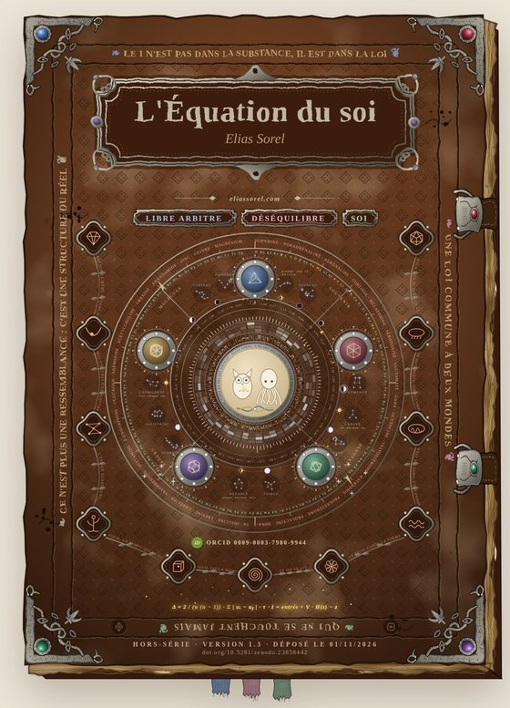

Résumé
Ce texte pose le soi comme une équation à tester, en chimie, en physique et en mathématiques, et non comme une définition.
SOI = (M ⟷ P) × C(t)
C(t) = (S, Δ), le soi chimique · P, le soi physique, δ = a − â · M = (r, Rec), le soi mathématique
Le soi dedans. Le soi chimique, lu sur un bain de 29 molécules dont la plage est mesurée chez l'humain (cortisol, mélatonine, adénosine, acétylcholine…). S est la place, Δ l'écart entre les niveaux. Le niveau de base glisse lentement ou se verrouille par hystérésis (Scheffer). La décision se lit comme une porte à seuil (Libet ; Schurger ; Maoz).
Le soi entre. La brisure d'un seuil et la copie de la commande, δ = a − â (von Holst et Mittelstaedt ; Wolpert). Un je ne se reconnaît que par un tu. La trace de l'autre a un lieu, la région CA2 de l'hippocampe (Hitti et Siegelbaum), et se réécrit à chaque rappel (la brebis et son agneau, Perrin).
Le nous. Accord de phase et réciprocité (Huygens ; Kuramoto ; Mirollo et Strogatz). Du blob et de la colonie de fourmis aux groupes humains : synchronie cardiaque (Konvalinka), synchronie des cerveaux (Dikker), contagion de l'humeur (Barsade).
Chaque affirmation porte son registre et sa source :
Hors-série, après Le Diamant et L'Icosaèdre (Elias Sorel, 2026). Nous ne sommes pas la mesure du vivant.
En chiffres
Le plan
- SeuilThèse une question · antithèse le récit · synthèse le pari
- I · ThèseLibre arbitre, le soi dedans : §0 le lit · I.1 le bain · I.2 la porte · I.3 la plage qui bouge · chute · mur · ce qui se mesure · Chant I
- II · AntithèseDéséquilibre, le soi entre : II.1 l'autre est là avant · II.2 le déséquilibre et la brisure · II.3 le je et le tu naissent ensemble · chute · mur · ce qui se mesure · Chant II
- III · SynthèseSoi, le nous : III.1 le nous sans je · III.2 le groupe · III.3 le pont des cubes · l'équation, entière · chute · mur · ce qui se mesure · Chant III
- ChuteConclusion · Et le chant hurla
Abstract
L'Équation du soi (The Equation of the Self) poses the self as an equation to be tested in chemistry, physics and mathematics, not as a definition. Mother formula: SELF = (M ⟷ P) × C(t). Part I, Free Will (the self within): the chemical self C(t) = (S, Δ), read on a bath of 29 molecules with ranges measured in humans (cortisol, melatonin, adenosine, acetylcholine and others); S is the place, Δ the gap between levels; baselines drift slowly or lock through hysteresis (bistability; slowing down before a tipping point, Scheffer); decision is read as a threshold gate (readiness potential: Libet; Schurger; Maoz). Part II, Imbalance (the self between): the physical self P, the break of a threshold and the efference copy δ = a − â (von Holst and Mittelstaedt; Wolpert); an I is recognised only through a you, physical (tu₀) or recognised (tu₁); the trace of the other has a place (hippocampal CA2, Hitti and Siegelbaum) and is rewritten at each recall (ewe and lamb, Perrin). Part III, Self (the we): the mathematical self M = (r, Rec), phase agreement and reciprocity (Huygens; Kuramoto; Mirollo and Strogatz), from the slime mould and the ant colony to human groups (cardiac synchrony, Konvalinka; brain-to-brain synchrony, Dikker; mood contagion, Barsade). Every claim carries its register (ESTABLISHED, DEBATED, READING, MODEL, HYPOTHESIS). 35 equation boxes, 17 figures, 11 proposed tests (T0 to T10), 218 references. Full text in French, English abstract.
Mots-clés
- soi
- libre arbitre
- reconnaissance de soi
- copie d'efférence
- neurochimie
- niveau de base
- hystérésis
- bistabilité
- point de bascule
- modèle de Kuramoto
- synchronisation
- mémoire sociale
- biologie théorique
Pour citer
Sorel, E. (2026). L'Équation du soi : voyage à travers l'individu (Libre arbitre · Déséquilibre · Soi) (version 1.3). Zenodo. https://doi.org/10.5281/zenodo.23858442